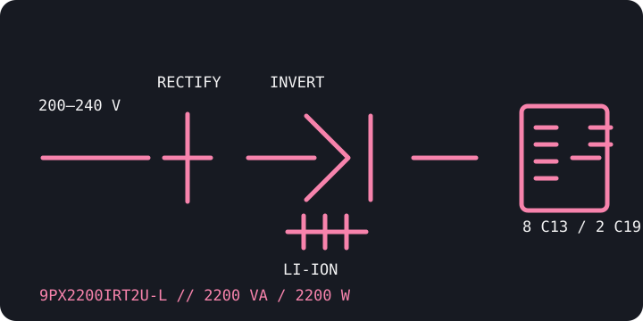

[ ONLINE DOUBLE-CONVERSION UPS // IDENTIFIED MODEL ]
Eaton 9PX2200IRT2U-L
A lithium-ion 2U international variant in Eaton's 9PX family. This -L SKU is distinct from the sealed lead-acid 9PX2200IRT2U and carries 2200 VA / 2200 W ratings with configurable 200–240 V output.

ARCHIVAL IDENTIFICATION: The full -L suffix is essential: use only compatible lithium-ion battery modules/accessories and service instructions for this SKU.
Exact model specifications
| Catalog category / topology | Online UPS — double-conversion, sine-wave output. |
|---|---|
| Electrical ratings | 2200 VA / 2200 W; output configurable for 200/208/220/230/240 V AC. Verify configured voltage, circuit and region from the unit label. |
| Transfer behavior | 0 ms inverter transfer in normal online operation. Bypass switching is a separate operating mode with model-specific behavior. |
| Receptacles / connectors | Eight IEC C13 and two IEC C19 outputs. Match cords, branch circuits and input connector to the exact regional installation guide. |
| Battery / runtime | Internal hot-swappable lithium-ion battery system; compatible lithium-ion EBMs are optional. Use Eaton's 9PX lithium runtime specifications for the actual load and installation—runtime varies by configuration and battery condition. |
| Communication | LCD, USB, serial and remote-control connections; optional Mini-Slot network/management card. Check exact installed options and supported monitoring software. |
| Compatibility / safety | Designed for compatible 200–240 V loads, not 120 V equipment. Do not fit lead-acid RT2U battery modules to this -L model; follow Eaton lithium battery handling, service, ventilation and disposal instructions. |
Manufacturer references
- Eaton — 9PX2200IRT2U-L product/SKU pageManufacturer model record for the lithium-ion international SKU.
- Eaton — 9PX lithium-ion technical specificationsManufacturer specifications for 9PX lithium-ion electrical, battery and runtime characteristics.
- Eaton — 9PX lithium-ion advanced user manualManufacturer installation, operating and battery safety information; confirm exact model/revision coverage.